javascript 原型, 一文让你理解什么是 JS 原型
先看
javascript-原型继承对象创建有 2 种方式, 这里只看通过 new+构造函数的方式.
如果是通过字面量{}创建的,那么原型就是Object.prototype
对象字面量不过是
new的语法糖, 可以看他们的prototype
原型链图
先把这张图过一遍
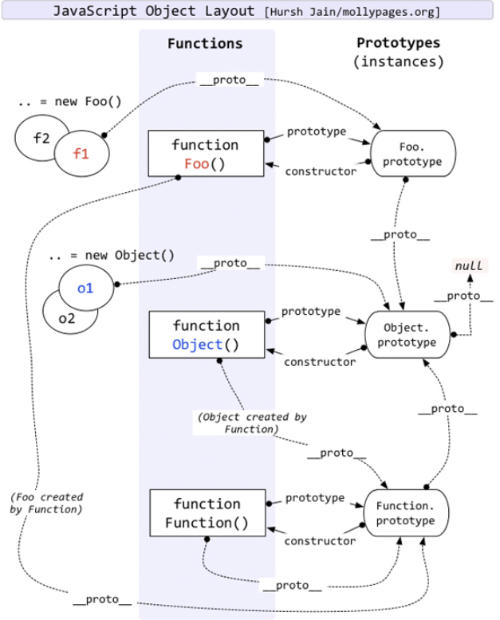
typeof Object是"function". 也称这样的对象为构造器（constructor)
因而，所有的构造器都是对象，但不是所有的对象都是构造器。let n = new Function()出来的是一个匿名函数诶.
1 | // 这里看图可以得出 |
方法也是函数, 可以递归上去:
1 | Function.prototype.method1 = function() { |
JavaScript 深入之从原型到原型链
上图说原型链是__proto__这条路
1. 原型
1.1 传统构造函数的问题
通过自定义构造函数的方式，创建小狗对象：
1 | function Dog(name, age) { |
画个图理解下：
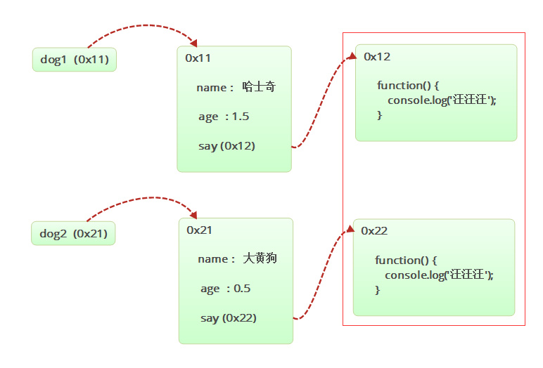
每次创建一个对象的时候，都会开辟一个新的空间，我们从上图可以看出，每只创建的小狗有一个say方法，这个方法都是独立的，但是功能完全相同。随着创建小狗的数量增多，造成内存的浪费就更多，这就是我们需要解决的问题。
为了避免内存的浪费，我们想要的其实是下图的效果：
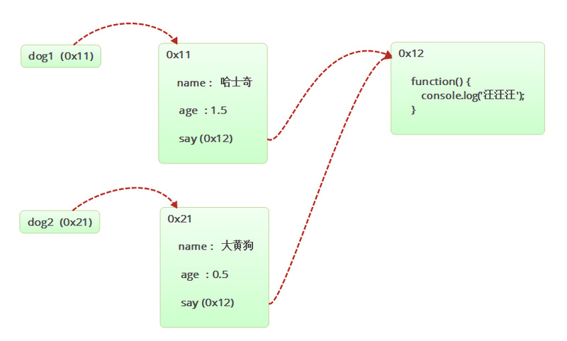
解决方法：
这里最好的办法就是将函数体放在构造函数之外，在构造函数中只需要引用该函数即可。
1 | function sayFn() { |
这样写依然存在问题：
- 全局变量增多，会增加引入框架命名冲突的风险
- 代码结构混乱，会变得难以维护
想要解决上面的问题就需要用到构造函数的原型概念。
构造函数JavaScript Prototype(原型) 新手指南 中说到,
new相当于注释了
1 | function Animal(name, energy) { |
new 有一个很酷的地方——当您使用 new 关键字调用函数时，注释掉的这两行代码是隐式(引擎)完成的，创建的对象称为 this。
使用注释来显示在幕后发生的事情并假设使用 new 关键字调用 Animal 构造函数，可以将其重写为这样：
1 | function Animal(name, energy) { |
同样，这样做以及为我们创建 this 对象的原因是，我们使用 new 关键字调用构造函数。如果在调用函数时不使用 new ，则该对象永远不会创建，也不会隐式返回。我们可以在下面的例子中看到这个问题。
1 | function Animal(name, energy) { |
此模式的名称是 Pseudoclassical Instantiation(伪类实例化) 。
1.2 原型的概念
prototype：原型。每个构造函数在创建出来的时候系统会自动给这个构造函数创建并且关联一个空的对象。这个空的对象，就叫做原型。
关键点：
- 每一个由构造函数创建出来的
对象，都会默认的和构造函数的原型关联； - 当使用一个方法进行属性或者方法访问的时候，会先在当前对象内查找该属性和方法，如果当前对象内未找到，就会去跟它关联的原型对象内进行查找；
- 也就是说，在原型中定义的方法跟属性，会被这个构造函数创建出来的对象所
共享； 访问原型的方式：构造函数名.prototype。
示例图：
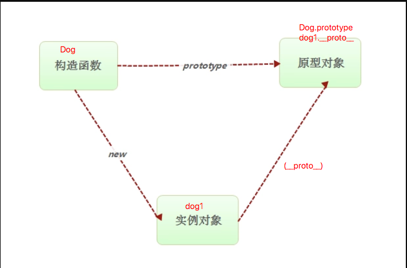
示例代码： 给构造函数的原型添加方法
1 | function Dog(name, age) { |
我们可以看到，本身Dog这个构造函数中是没有say这个方法的，我们通过Dog.prototype.say的方式，在构造函数Dog的原型中创建了一个方法，实例化出来的dog1、dog2会先在自己的对象先找say方法，找不到的时候，会去他们的原型对象中查找。
如图所示:
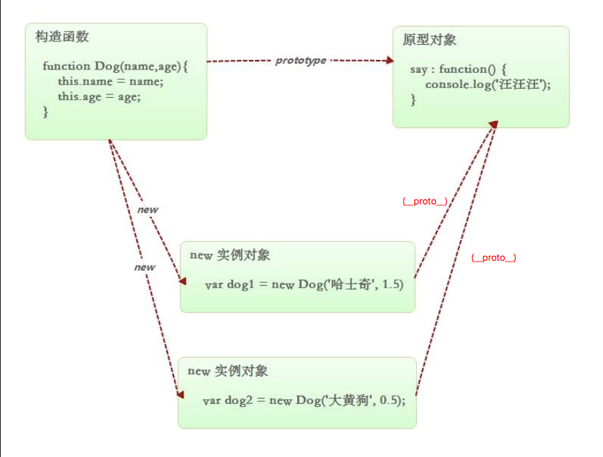
在构造函数的原型中可以存放所有对象共享的数据，这样可以避免多次创建对象浪费内存空间的问题。
1.3 原型的使用
1、使用对象的动态特性: 就是直接使用prototype为原型添加属性或者方法。
1 | function Person() {} |
2、直接替换原型对象, (空对象)
每次构造函数创建出来的时候，都会关联一个空对象，我们可以用一个对象替换掉这个空对象。
1 | function Person() {} |
注意: 使用原型的时候，有4个注意点需要注意一下，我们通过几个案例来了解一下。
1 使用对象.属性名去获取对象属性的时候，会先在自身中进行查找，如果没有，再去原型中查找；(所以只要查询才能体会到原型链的存在, 后面的设置属性是和原型链无关的)
1 | // 创建一个英雄的构造函数 它有自己的 name 和 age 属性 |
2 使用对象.属性名去设置对象属性的时候，只会在自身进行查找，如果有，就修改，如果没有，就添加；(注意:这里能不能添加修改原型上有的属性, 看这个原型上的属性允不允许赋值 比如内置构造函数的原型是只读的Object.prototype = o 不行的)
1 | // 创建一个英雄的构造函数 |
3 一般情况下，不会将属性放在原型中，只会将方法放在原型中；
4 在替换原型的时候，替换之前创建的对象，和替换之后创建的对象的原型不一致！！！
1 | // 创建一个英雄的构造函数 它有自己的 name 属性 |
图:
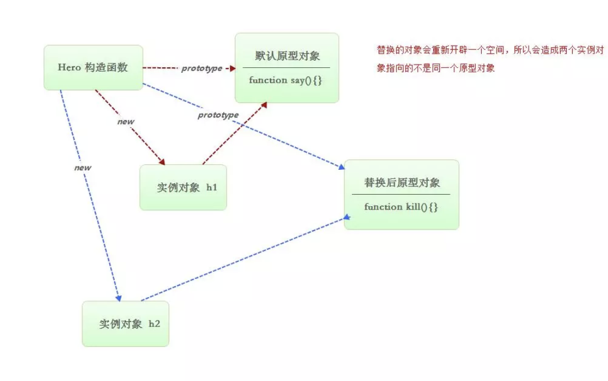
图中可以看出，实例出来的h1对象指向的原型中，只有say()方法，并没有kill()方法，所以h1.kill()会报错。同理，h2.say()也会报错。
1.4 __proto__属性 (前面图中也有显示)
私有属性和非标准属性
在 js 中以
_开头的属性名为 js 的私有属性，以__开头的属性名为非标准属性。__proto__是一个非标准属性，最早由firefox提出来。
1、构造函数的 prototype 属性
之前我们访问构造函数原型对象的时候，使用的是prototype属性：
1 | function Person() {} |
在之前我们是无法通过构造函数new出来的对象访问原型的：
1 | function Person() {} |
2、实例对象的 __proto__ 属性
其次是
__proto__，绝大部分浏览器都支持这个非标准的方法访问原型，然而它并不存在于Person.prototype中，实际上，它是来自于Object.prototype，与其说是一个属性，不如说是一个getter/setter，当使用obj.__proto__时，可以理解成返回了Object.getPrototypeOf(obj)。
__proto__属性最早是火狐浏览器引入的，用以通过实例对象来访问原型，这个属性在早期是非标准的属性，有了__proto__属性，就可以通过构造函数创建出来的对象直接访问原型。
1 | function Person() {} |
如图所示: 也就是最开始的那张图中的从实例到原型那条
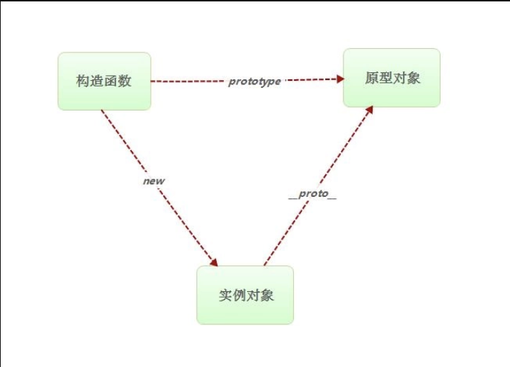
3、__proto__属性的用途, 调试用
- 可以用来访问原型；
- 在实际开发中除非有特殊的需求，不要轻易的使用实例对象的
__proto__属性去修改原型的属性或方法； - 在调试过程中，可以轻易的查看原型的成员；
由于兼容性问题，不推荐使用。
1.5
constuctor属性, 指向构造函数, 用构造函数的name(构造函数的name就表示构造函数的类型)
constructor：构造函数，原型的constructor属性指向的是和原型关联的构造函数。
1 | function Dog() { |
如图所示:
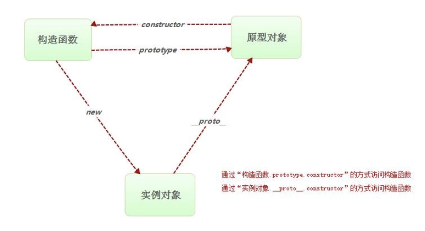
获取复杂类型的数据类型:
通过obj.constructor.name的方式(简写)，获取当前对象obj的数据类型。
在一个的函数中，有个返回值name，它表示的是当前函数的函数名；
1 | function Teacher(name, age) { |
实例化出来的teacher对象，它的数据类型是啥呢？我们可以通过实例对象teacher.__proto__，访问到它的原型对象，再通过.constructor访问它的构造函数，通过.name获取当前函数的函数名，所以就能得到当前对象的数据类型。又因为.__proto__是一个非标准的属性，而且实例出的对象继承原型对象的方法，所以直接可以写成：obj.constructor.name。
1.6 原型继承
原型继承：每一个构造函数都有prototype原型属性，通过构造函数创建出来的对象都继承自该原型属性。所以可以通过更改构造函数的原型属性来实现继承。
继承的方式有多种，可以一个对象继承另一个对象，也可以通过原型继承的方式进行继承。
1、简单遍历继承:
直接遍历一个对象，将所有的属性和方法加到另一对象上。
1 | var animal = { |
缺点：只能一个对象继承自另一个对象，代码复用太低了。
2、混入式原型继承:
混入式原型继承其实与上面的方法类似，只不过是将遍历的对象添加到构造函数的原型上。
1 | var obj = { |
面向对象思想封装一个原型继承:
我们可以利用面向对象的思想，将面向过程进行封装。
1 | function Dog() { |
3、替换式原型继承:
替换式原型继承，在上面已经举过例子了，其实就是将一个构造函数的原型对象替换成另一个对象。
1 | function Person() { |
之前我们就说过，这样做会产生一个问题，就是替换的对象会重新开辟一个新的空间。
替换式原型继承时的 bug:
替换原型对象的方式会导致原型的
constructor的丢失，constructor属性是默认原型对象指向构造函数的，就算是替换了默认原型对象，这个属性依旧是默认原型对象指向构造函数的，所以新的原型对象是没有这个属性的。
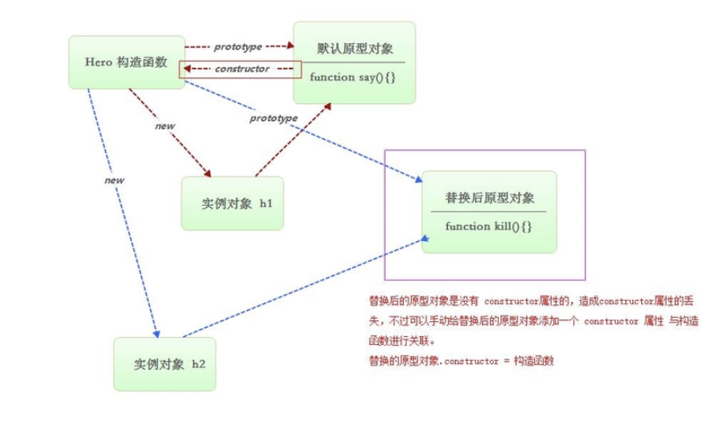
解决方法：手动关联一个constructor属性
1 | function Person() { |
4、Object.create()方法实现原型继承:
当我们想把对象1作为对象2的原型的时候，就可以实现对象2继承对象1。前面我们了解了一个属性：__proto__，实例出来的对象可以通过这个属性访问到它的原型，但是这个属性只适合开发调试时使用，并不能直接去替换原型对象。所以这里介绍一个新的方法：Object.create()。
语法： var obj1 = Object.create(原型对象);
示例代码： 让空对象obj1继承对象obj的属性和方法
1 | var obj = { |
兼容性(暂时不考虑)：
由于这个属性是ECMAScript5的时候提出来的，所以存在兼容性问题。
利用浏览器的能力检测，如果存在Object.create则使用，如果不存在的话，就创建构造函数来实现原型继承。
1 | // 封装一个能力检测函数 |
2.原型链
对象有原型，原型本身又是一个对象，所以原型也有原型，这样就会形成一个链式结构的原型链
2.1 什么是原型链
示例代码： 原型继承练习
1 | // 创建一个 Animal 构造函数 |
如图所示：
我们将上面的案例通过画图的方式展现出来后就一目了然了，实例对象animal直接替换了构造函数Person的原型，以此类推，这样就会形成一个链式结构的原型链。
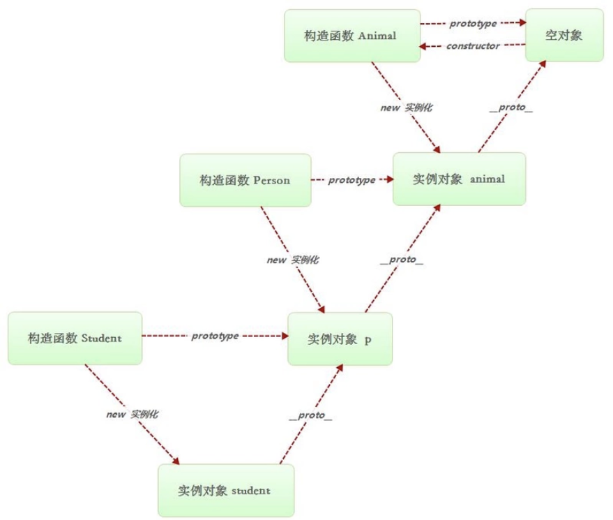
完整的原型链:
结合上图，我们发现，最初的构造函数Animal创建的同时，会创建出一个原型，此时的原型是一个空的对象。结合原型链的概念：“原型本身又是一个对象，所以原型也有原型”，那么这个空对象往上还能找出它的原型或者构造函数吗？
我们如何创建一个空对象？ 1、字面量：{}；2、构造函数：new Object()。我们可以简单的理解为，这个空的对象就是，构造函数Object的实例对象。所以，这个空对象往上面找是能找到它的原型和构造函数的。
1 | // 创建一个 Animal 构造函数 |
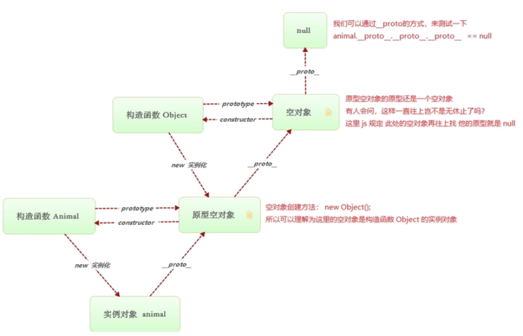
2.2 原型链的拓展
1、描述出数组[]的原型链结构:
1 | // 创建一个数组 |
如图所示：
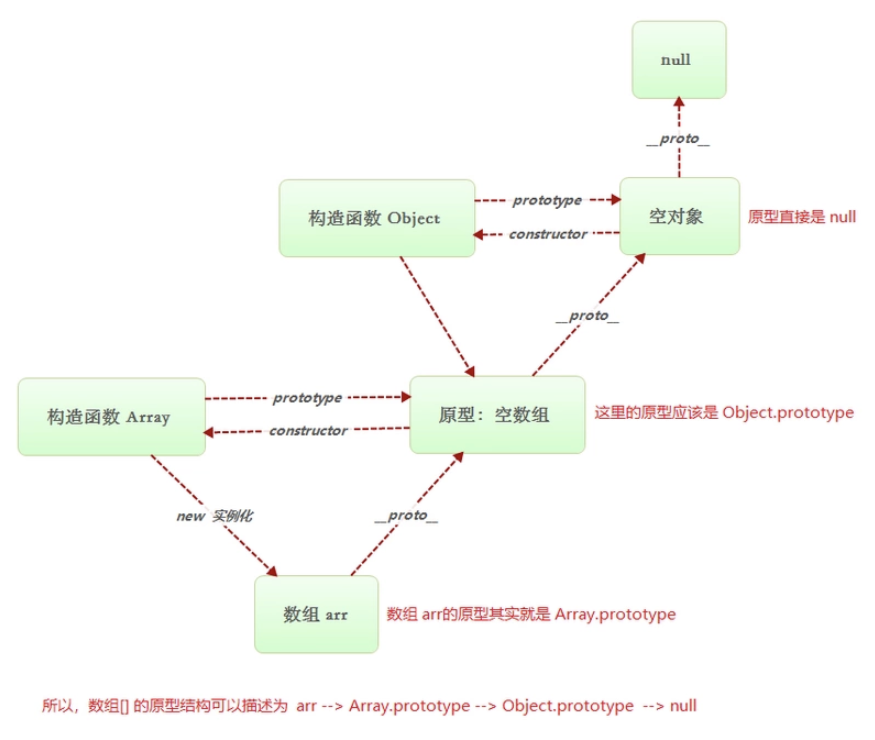
2、扩展内置对象:
给 js 原有的内置对象，添加新的功能。
注意：这里不能直接给内置对象的原型添加方法，因为在开发的时候，大家都会使用到这些内置对象，假如大家都是给内置对象的原型添加方法，就会出现问题。
错误的做法：
1 | // 第一个开发人员给 Array 原型添加了一个 say 方法 |
为了避免出现这样的问题，只需自己定义一个构造函数，并且让这个构造函数继承数组的方法即可，再去添加新的方法。
1 | // 创建一个数组对象 这个数组对象继承了所有数组中的方法 |
2.3 属性的搜索原则(不是设置)
当通过对象名.属性名获取属性是 ，会遵循以下属性搜索的原则：
- 首先去对象自身属性中找，如果找到直接使用，
- 如果没找到去自己的原型中找，如果找到直接使用，
- 如果没找到，去原型的原型中继续找，找到直接使用，
- 如果没有会沿着原型不断向上查找，直到找到 null 为止。
关于查询和设置中, 如果遇到没有的属性, 报undefined和报错
比如没有x.ddd 是undefined, 如果在x.ddd.length则报错,而不是undefined, 所有 用 x.dd && x.dd.length
结论就是null和undefined无论是读取他们的属性或设置属性都是报错的.